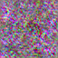
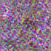
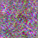
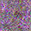

影石门店 · 训练实验 v0
本机CPU完成的真实训练与流程验证 · 2026-09-23
布局模型只预测体验桌数量；风格LoRA使用tiny测试基模，图像无实用质量。正式SI风格模型尚未训练。
布局基线 · 已完成
11 家门店
3000步梯度更新；输入面积，输出体验桌数量
0.455 张
留一验证平均绝对误差；均值基线 0.691 张
留一验证取整命中 7/11 家。样本不足以证明普遍适用；位置仍由规则生成，Demo开关默认关闭。
| 留出门店 | 图纸数量 | 预测 | 误差 |
|---|
| PDF-159 | 3 | 2.66 | 0.34 |
| PDF-160 | 1 | 1.96 | 0.96 |
| PDF-194 | 2 | 1.85 | 0.15 |
| PDF-051 | 2 | 1.74 | 0.26 |
| PDF-171 | 1 | 1.94 | 0.94 |
| PDF-239 | 2 | 1.81 | 0.19 |
| PDF-079 | 4 | 4.81 | 0.81 |
| PDF-083 | 3 | 2.27 | 0.73 |
| PDF-071 | 2 | 2.18 | 0.18 |
| PDF-293 | 2 | 1.65 | 0.35 |
| PDF-296 | 2 | 1.91 | 0.09 |
逐折评估 · 模型权重及训练损失 · 四店几何草标注（含缺失项）
两种SI风格 · 流程验证已完成
11家店共22图，按门店固定划分：9家18图训练，2家4图验证。两个风格分别训练，仅更新LoRA参数。
SI1.0 · 80 步
5家训练，1家验证；23,040个可训练参数
验证噪声MSE：1.0790 → 1.0533
重载像素最大差：0


左：训练前；右：训练后。同种子测试图，噪声状输出是tiny测试基模的限制，不能用于门店设计。
完整运行记录 ·
tiny LoRA权重SI2.0 · 80 步
4家训练，1家验证；23,040个可训练参数
验证噪声MSE：1.0782 → 1.0523
重载像素最大差：0


左：训练前；右：训练后。同种子测试图，噪声状输出是tiny测试基模的限制，不能用于门店设计。
完整运行记录 ·
tiny LoRA权重查看真实训练/验证图片 · 图片来源与caption
下一轮需要补齐
核对SI历史版本、补齐平面精确尺寸与道具坐标、增加独立门店样本。具备GPU后，按已准备脚本重新训练SD1.5风格LoRA；tiny权重不能迁移当作SD1.5成品。
运行说明与GPU训练命令 · 设计范围